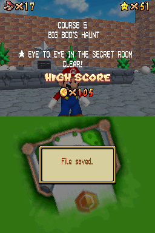
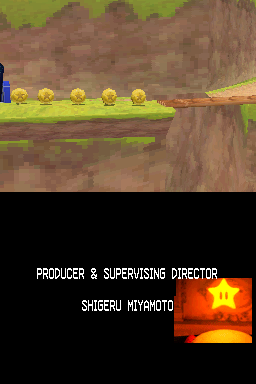
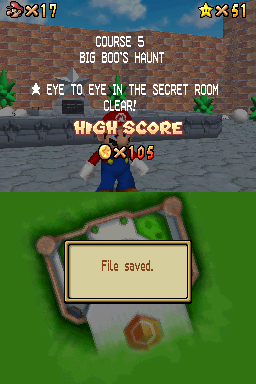
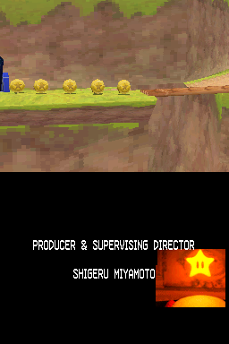

Super Mario 64 DS

Complete on 2023-06-03
3 / 5
Release Date: Nov 20, 2004
Meta Score: 85
Screenshots
 



Notes
It's Mario 64, but on the DS! Half hearted touch screen controls, yay. More seriously, it is actually an upgraded remake with extra content (mostly 1 extra star per level and some extra castle bonus stars) and character switching.
The character switching I think mostly ends up being annoying rather than really adding a lot. "Oh I need Luigi to get through here, guess I have to find his hat or exit the level and go switch" isn't really adding anything, when in the original game Mario could just do everything. I think they didn't properly account for Mario's floaty P-Balloon type power and some levels get kinda broken by it. Also playing Wario sucks egregiously, he's so slow, barely jumps, and the only reason to use him is when you have to.
Time to be controversial: I don't love Mario 64 that much. It's fine, it basically invented the genre, but the latter Mario 3D platformers (e.g. Galaxy, Odyssey) are much better.
I don't like the controls that much. I always find Mario a bit too slidey and loose to control. I never feel like I'm really in control and able to platform skillfully. Also the way Mario reacts to sloped surfaces in this game constantly frustrates me, especially given how many of the levels have bottomless pits everywhere that he loves to belly slide into. On the DS I end up just using the buttons and missing analogue sticks.
I also think the structure of the game is bad. Getting kicked out everytime you get a star is bad. You end up repeating parts of the level so many times. If there are 2 stars close to each other in the level it's always like "guess I'll do the same platforming to get over there twice, that's fun". It took them until Odyssey to finally break out of this rut too, although Sunshine and the Galaxies do a much better job of not feeling like you're doing the exact same thing multiple times.
The camera absolutely sucks balls in this version. It's not that great in the original, but the DS controls amplify that as it's awkward to change on the fly. Just terrible.
If you walk off a ledge slowly, mario will drop down and grab the ledge. No one has ever wanted to do that, and it constantly messes you up when trying to drop off a ledge.
Overall, this isn't the best version of Mario 64, and as discussed I don't like Mario 64 that much. 3/5, fight me Mario 64 fans.